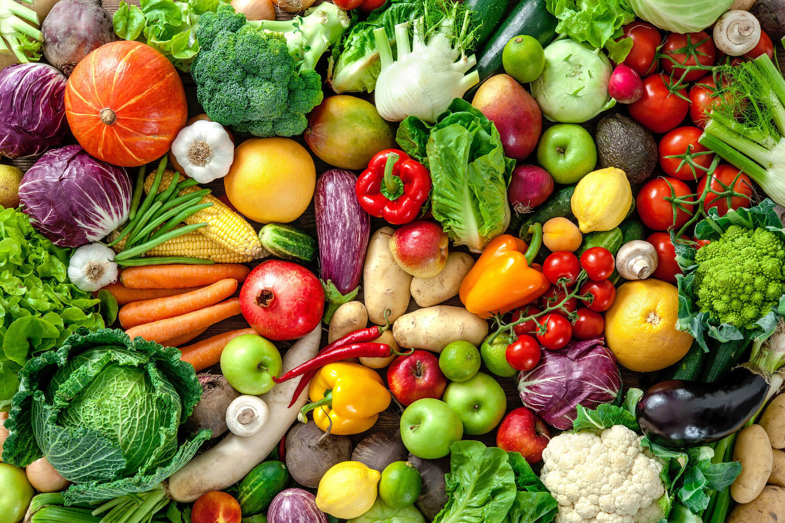

In this article you can find out about healthy lifestyle.
Eating a balanced diet is crucial for maintaining good health. Include a variety of fruits, vegetables, whole grains, and lean proteins in your meals. Avoid excessive consumption of processed foods, sugary drinks, and high-fat items.
Regular physical activity is essential for overall well-being. Aim for at least 150 minutes of moderate-intensity exercise per week, such as brisk walking, cycling, or swimming. Incorporate strength training exercises at least twice a week to build muscle and improve metabolism.
Getting enough quality sleep is vital for health. Most adults need 7-9 hours of sleep per night. Establish a regular sleep schedule, create a relaxing bedtime routine, and ensure your sleep environment is comfortable and free from distractions.

Incorporate healthy habits into your daily routine, such as staying hydrated, managing stress through mindfulness or meditation, and avoiding harmful behaviors like smoking and excessive alcohol consumption. Regular health check-ups can also help in early detection and prevention of diseases.
| Day | Activity | Duration |
|---|---|---|
| Monday | Brisk Walking | 30 minutes |
| Tuesday | Strength Training | 45 minutes |
| Wednesday | Cycling | 30 minutes |
| Thursday | Yoga/Stretching | 30 minutes |
| Friday | Swimming | 30 minutes |
| Saturday | Hiking/Outdoor Activity | 60 minutes |
| Sunday | Rest/Light Activity (e.g., walking) | 20 minutes |